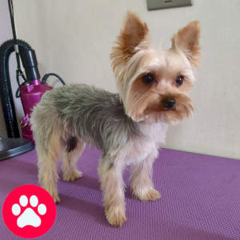
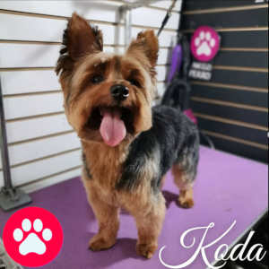
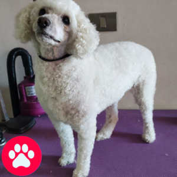
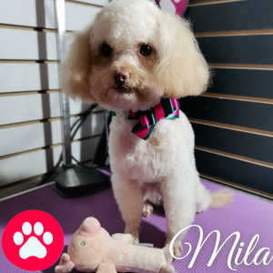
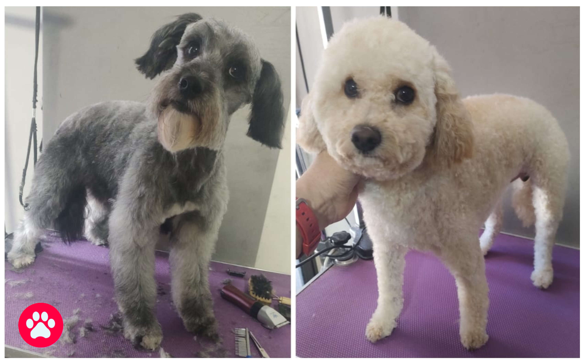
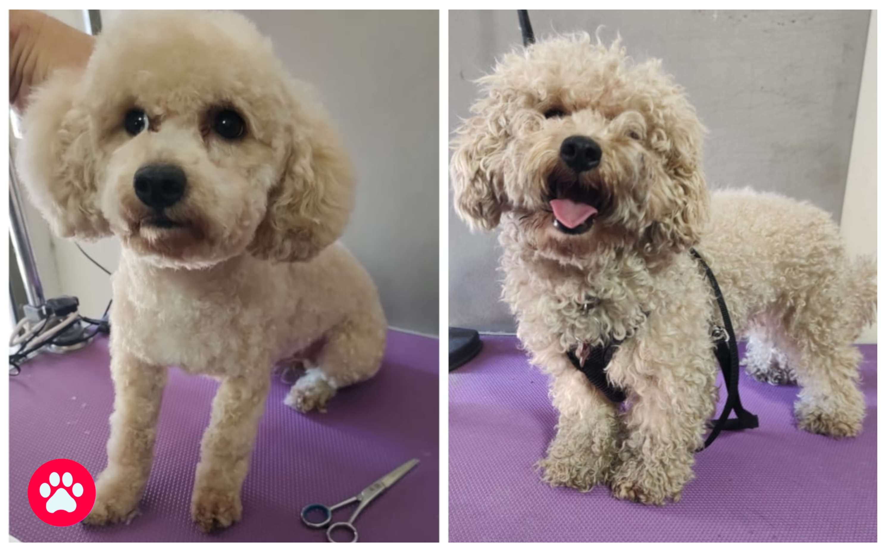

Peluquería Canina a Domicilio en Santiago de Chile.
Vea todas las fotos y videos de atenciones a mascotas en mis redes sociales: TikTok y el Instagram.






📍 Tengo 3 puntos de referencia en Google Maps (comunas aledañas) — consulte disponibilidad.
• Hasta 10 kg (Consulteme para excepciones).
• Nudos extremos: se recibe con recargo según caso. (caso rescates, abandonos etc.)
• Perritos de tercera edad (peligroso si tiene asuntos cardíacos y es nervioso o agresivo)
No puedo atender estos casos:• Tiene condiciones médicas importantes (verrugas sangrantes, heridas abiertas, sarna, infecciones fuertes, infestación).
• No atiendo perritos agresivos (por seguridad del perrito y la mia)
• No se pueden atender perritos extremadamente nerviosos (afecta su salud y lo pone en peligro)